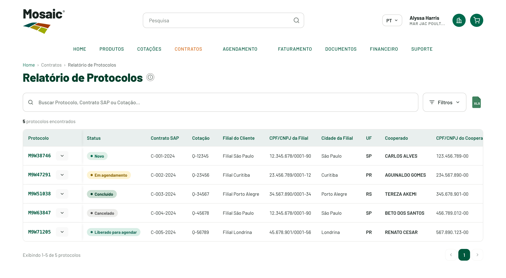
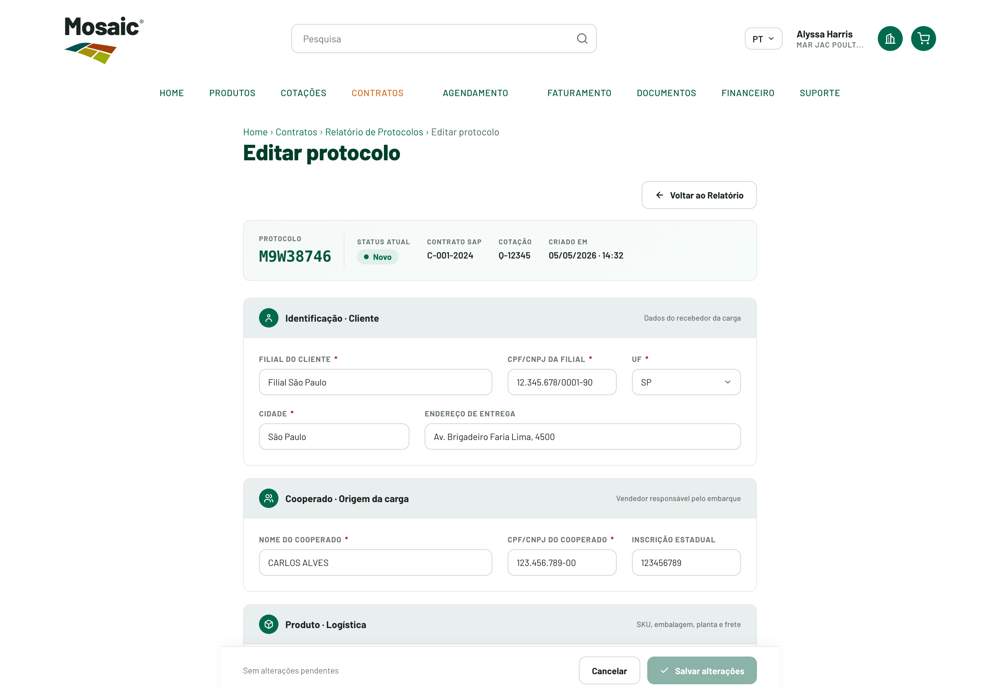
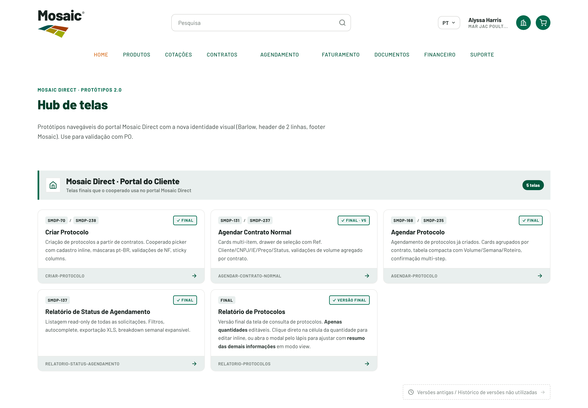

Mosaic Direct 2.0
Os benefícios de cada tela do Portal do Cliente — o que muda, na prática, para quem opera. Comece pelo resumo e navegue tela a tela.
Da planilha ao sistema
Antes, o trabalho vivia em planilhas: muitas colunas, scroll para todo lado e pouca hierarquia. O Mosaic Direct organiza as mesmas informações em telas consistentes — com modais no foco, tabelas contidas, colunas congeladas e navegação por botões. Abaixo, os benefícios tela a tela.
Componentes de usabilidade
As decisões de UX transversais a todas as telas — cada uma com o problema de hoje, o ganho e a referência de mercado que valida a escolha.
10 componentes gerais, com defesa e benchmark
Modal centralizado, coluna congelada, cell stacking, barra fixa, hint de estado vazio, status na borda, filtros colapsáveis, autocomplete e botões de bloco ‹ › — cada um comparado ao jeito de hoje (planilha) e ancorado em referências de mercado.
Tela a tela
Clique em uma tela para abrir os benefícios completos.

Relatório de Protocolos
Acompanhamento dos protocolos por status, quantidades agendadas/faturadas e saldos.

Relatório de Status de Agendamento
Acompanhamento das solicitações de agendamento por semana, tipo e status.

Agendar Contrato Normal
Seleção de contratos e itens para criação de agendamentos.

Agendar Protocolo
Seleção de protocolos para criação de agendamentos.

Criar Protocolo
Criação de protocolos a partir de contratos e itens, com seleção de cooperado.

Editar Protocolo
Tela completa de edição de um protocolo (campos, quantidades, NF, roteiro).

Hub do Portal
Página inicial que lista e dá acesso a todas as telas do portal.
Quer ver no portal?
Abra o Mosaic Direct e navegue pelas telas já organizadas.
Ir para o Mosaic Direct